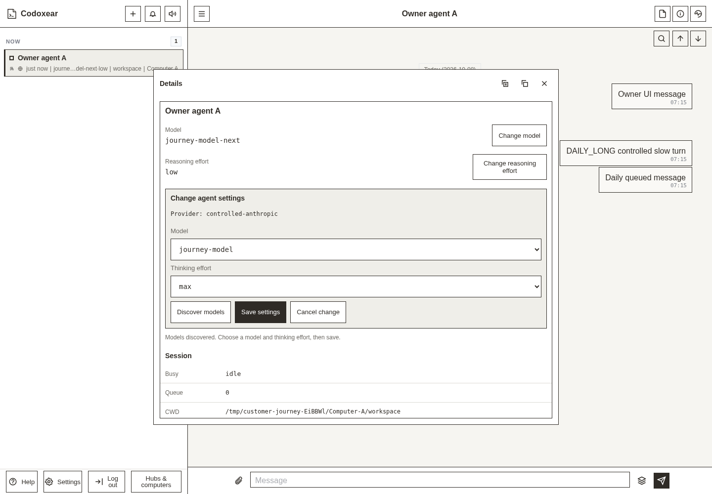
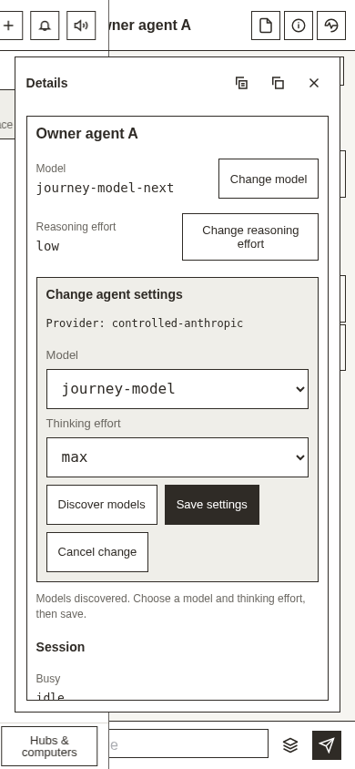
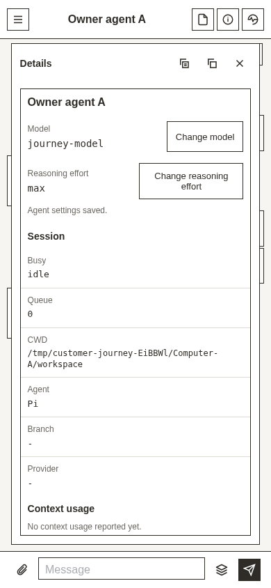
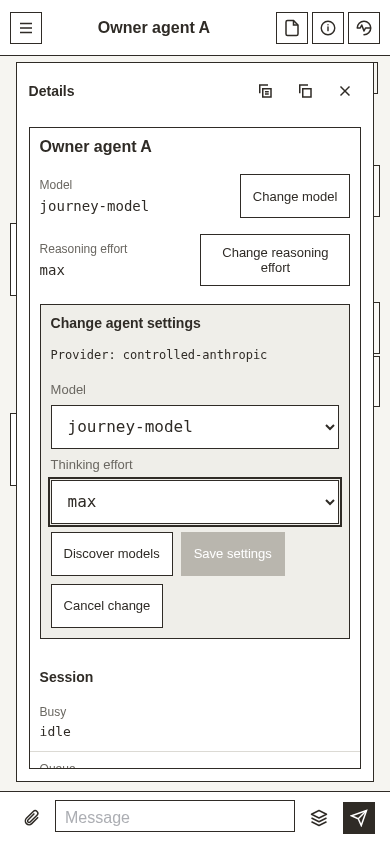
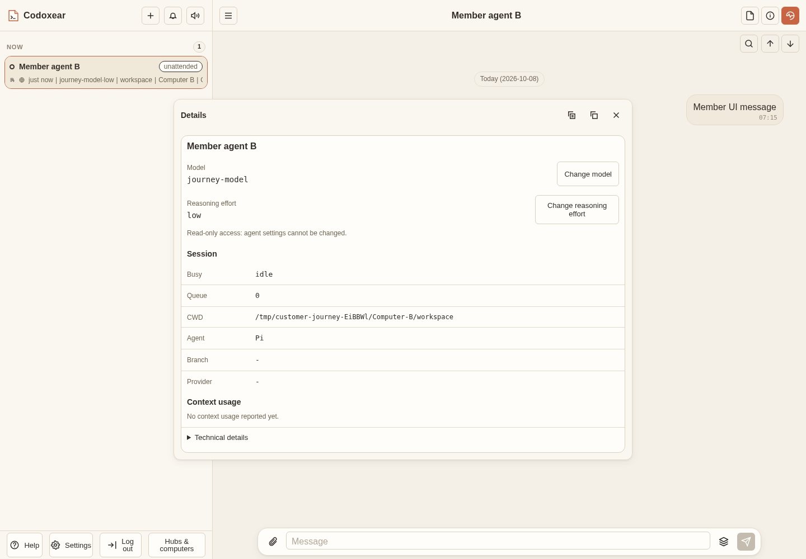
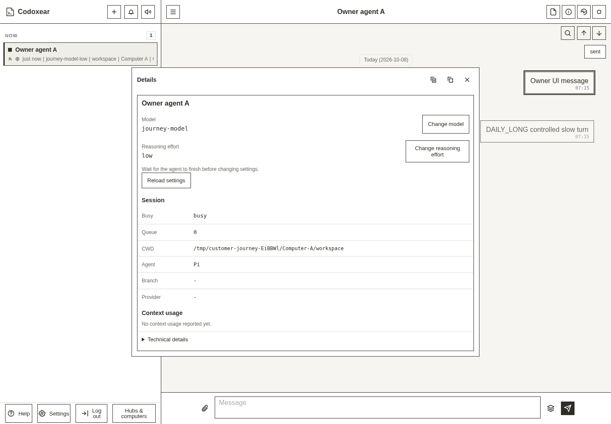

HarmonyOS-inspired current settings and Change controls. Browser-tested on the deployed web frontend with controlled OAuth and model responses. Application changes use the UI.






Exact test sources and boundaries